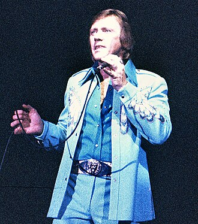

Bobby Hatfield
Robert Lee Hatfield was an American singer. He and Bill Medley performed together as the Righteous Brothers. He sang the tenor part for the duo and sang solo on the group's 1965 recording of "Unchained Melody".
Complete Discography & Tracklists (3)